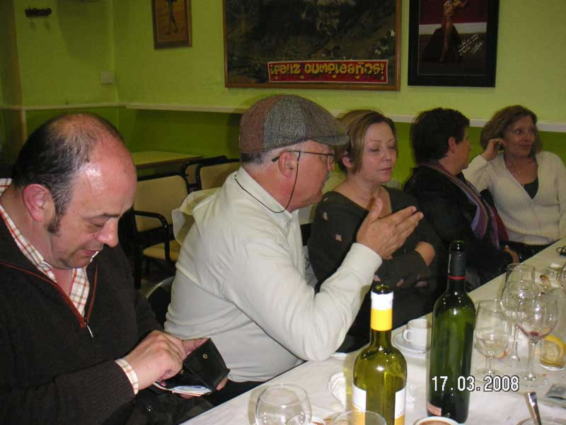

Encuentro en SantoñaAnterior | Inicio | Siguiente |
|
 Hay momentos en los que uno está mejor calladito, sino, ahí está la prueba, Wetomaster hablando de algo tan interesante como es la simbiosis marina de los corales rojos y, Fernando buscando el cupón de la ONCE, Ana, dormida y Carmeli y Pilar, a otra batalla... |